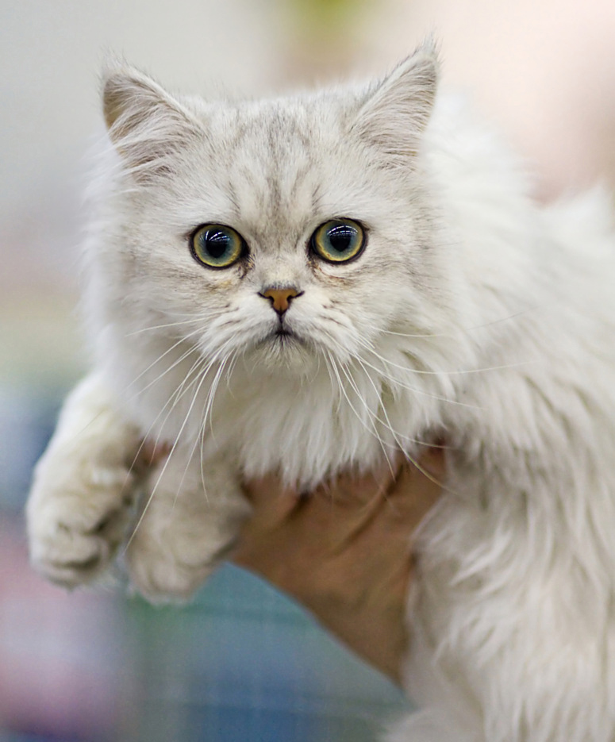
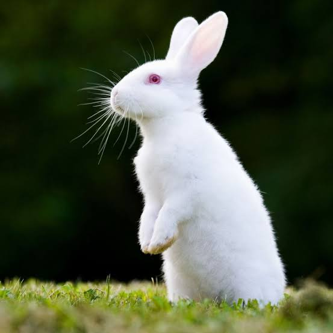

| Type of Animal/Bird | Description/List of Characteristics | Image |
|---|---|---|
| Dog | Golden Retriever, 2 years old, friendly, loves to play fetch | |
| Cat | Tiffanie cat , 1 year old, playful, loves to cuddle |  |
| Bird | Parrot, 3 years old, talkative, loves to sing | |
| Rabbit | American Rabbit, 6 months old, shy, loves to hop around |  |
Here are some tips on how to care for your adopted pet:
Here are some websites related to pet adoption: